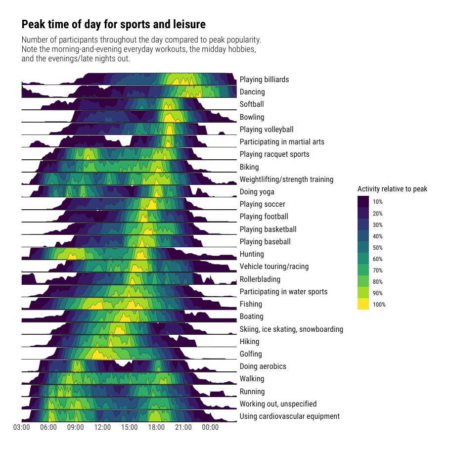

Example carved from: https://github.com/halhen/viz-pub/blob/master/sports-time-of-day/2_gen_chart.R
Set up data
sports <- read_tsv("https://github.com/halhen/viz-pub/raw/master/sports-time-of-day/activity.tsv")
sports %>%
group_by(activity) %>%
filter(max(p) > 3e-04,
!grepl('n\\.e\\.c', activity)) %>%
arrange(time) %>%
mutate(p_peak = p / max(p),
p_smooth = (lag(p_peak) + p_peak + lead(p_peak)) / 3,
p_smooth = coalesce(p_smooth, p_peak)) %>%
ungroup() %>%
do({
rbind(.,
filter(., time == 0) %>%
mutate(time = 24*60))
}) %>%
mutate(time = ifelse(time < 3 * 60, time + 24 * 60, time)) %>%
mutate(activity = reorder(activity, p_peak, FUN=which.max)) %>%
arrange(activity) %>%
mutate(activity.f = reorder(as.character(activity), desc(activity))) -> sports
sports <- mutate(sports, time2 = time/60)ggplot(sports, aes(time2, p_smooth)) +
geom_horizon(bandwidth=0.1) +
facet_grid(activity.f~.) +
scale_x_continuous(expand=c(0,0), breaks=seq(from = 3, to = 27, by = 3), labels = function(x) {sprintf("%02d:00", as.integer(x %% 24))}) +
viridis::scale_fill_viridis(name = "Activity relative to peak", discrete=TRUE,
labels=scales::percent(seq(0, 1, 0.1)+0.1)) +
labs(x=NULL, y=NULL, title="Peak time of day for sports and leisure",
subtitle="Number of participants throughout the day compared to peak popularity.\nNote the morning-and-evening everyday workouts, the midday hobbies,\nand the evenings/late nights out.") +
theme_ipsum_rc(grid="") +
theme(panel.spacing.y=unit(-0.05, "lines")) +
theme(strip.text.y = element_text(hjust=0, angle=360)) +
theme(axis.text.y=element_blank())